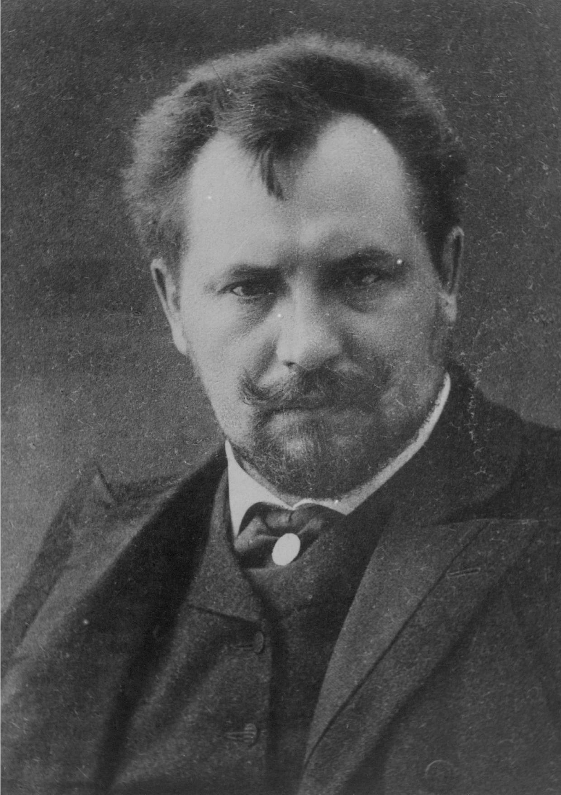

Kazimierz Przerwa-Tetmajer
-
Urodził się w zamożnej, ziemiańskiej rodzinie - jego ojciec, Adolf Tetmajer, był posłem do Sejmu Krajowego Galicji,
właścicielem ziemskim i marszałkiem powiatu nowotarskiego. Jego starszym, przyrodnim bratem był malarz
Włodzimierz Tetmajer;
-
W 1883 roku, po sprzedaży wiejskiego majątku, rodzina Tetmajerów przeniosła się do Krakowa, gdzie przyszły poeta
uczęszczał do gimnazjum. W 1884 zdał maturę i rozpoczął studia filozoficzne na Uniwersytecie Jagiellońskim.
Był współredaktorem Kuriera Polskiego (1889-93);
W 1895 jako sekretarz Adama Krasińskiego przebywał w Heidelbergu. Po powrocie do kraju mieszkał w Krakowie i Zakopanem,
odbywał także liczne podróże po Europie - do Włoch, Szwajcarii, Francji i Niemiec. Podczas I wojny światowej był ideowo
związany z Legionami, redagował także pismo Praca Narodowa i zorganizował Komitet Obrony Spisza, Orawy i Podhala.
-
Po wojnie zamieszkał w Warszawie, w 1921 roku został wybrany prezesem Towarzystwa Literatów i Dziennikarzy,
w 1928 - wyróżniony nagrodą literacką miasta Warszawy, a w 1934 roku mianowany członkiem honorowym Polskiej Akademii
Literatury. Choroba psychiczna i utrata wzroku uniemożliwiła mu twórczość przez kilkanaście ostatnich lat życia.
